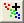

Letztes Update: 06.07.2018
Wenn Sie Version Origin 2017 und höher haben, können Sie einfach die App Data Highlighter verwenden. Um diese App zu verwenden, laden Sie die Datei von OriginLabs Webseite Dateiaustausch herunter und installieren Sie die App-Datei im Origin-Arbeitsbereich. Wenn Sie Origin 2018 haben, drücken Sie einfach F10, um den Dialog App-Center zu öffnen. Im App-Center können Sie nach Apps suchen und sie installieren.
Hinweis: Um die App Data Highlighter zu verwenden, zeichnen Sie Ihre Daten zunächst als 2D-Punktdiagramm. Wählen Sie dann bei aktiviertem Diagramm die App Data Highlighter im Fenster der Apps-Galerie.
Sollten Sie eine Spalte mit Informationen haben, die der Farbe der Datenzeichnung entsprechen (nennen wir sie Farbspalte) und diese Farbspalte befindet sich im gleichen Arbeitsblatt wie die Datenzeichnung, dann bilden Sie die Farbe auf die Werte in der Farbspalte (Tutorial) ab.
Wenn Sie eine Farbspalte haben, um die Farbe Ihres Datensatzes in der Zeichnung zu steuern, dann zeichnen Sie Ihre Daten und legen Sie einen zu färbenden Bereich fest. Dazu verwenden Sie das Minitool unter Minitools: Clustermanipulation. Gruppieren Sie zuerst Ihre Daten, indem Sie ein ROI-Feld (grafische Datenauswahl) einfügen, das alle gewünschten Datenpunkte umfasst, verwenden Sie dann die Schaltfläche Kategorien erstellen  für Farben und Datenpunkte und fügen Sie eine Gruppenspalte für alle ausgewählten Punkte mit einem kategorialen Wert hinzu. Sie können die Farbeinstellungen im Dialog Details Zeichnung ändern. Bitte lesen Sie diese FAQ zu Anweisungen für die Verwendung des Minitools Clustermanipulation.
Weitere Informationen zum Minitool Clustermanipulation finden Sie im Tutorial.
Origin-Version mind. erforderlich: 2016 SR0
Schlüsselwörter:Farbe, Bereiche, Fläche, markieren, Gruppendaten, Daten gruppieren, Daten identifizieren